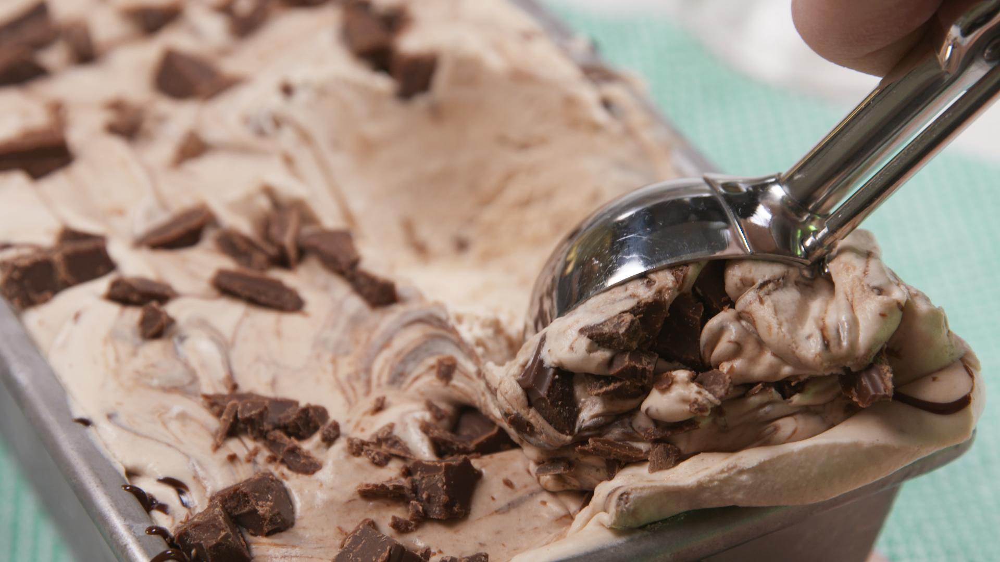

Mudslide No-Churn Ice Cream
INGREDIENTS :
- 2 c. heavy cream
- 1 14.5-ounce can sweetened condensed milk
- 1 c. Chopped Chocolate
- 1/4 c. hot fudge sauce, plus more for serving
- 2 tbsp. Kahlua
- 2 tbsp. Baileys Irish Cream
METHOD :
- In a stand mixer fitted with a whisk attachment, beat heavy cream until stiff peaks form, 5 minutes.
- Fold in sweetened condensed milk until fully combined, then fold in chocolate, fudge sauce, Kahlua, and Baileys.
- Transfer mixture to a 9-x-5" loaf pan and add one more chocolate swirl on top. Freeze 5 hours. When ready to serve, let soften 10 minutes. Serve with warm hot fudge.